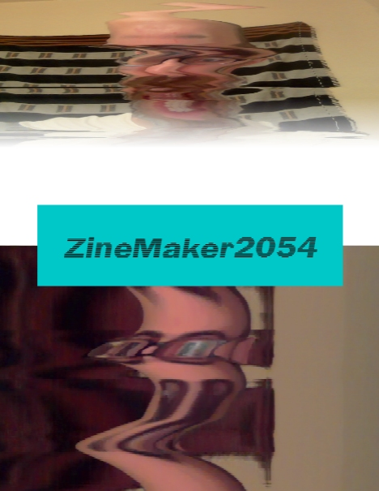
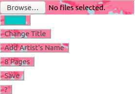
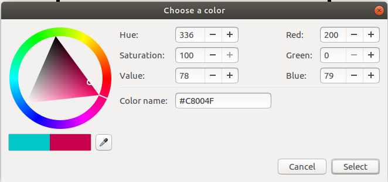
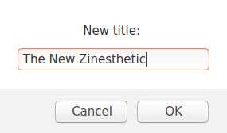
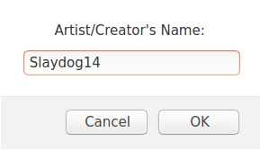
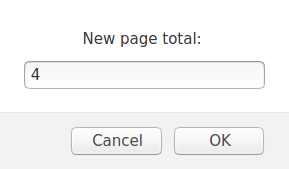
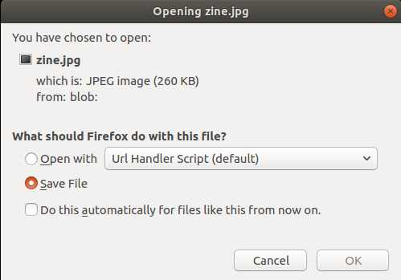

ZineMaker2054 Documentation
ZineMaker2054 is a next-generation zine creation tool to aid in your creative process. ZineMaker automates the creation of your zine's initial page photo layouts, then lets you select which pages you'd like to remix. You can add a title, your name, text background color, change the number of pages, or save your zine to your computer as an image file.
After you've loaded your images, click any page to refresh its layout.
Menu Options
File Selection - Click to open the file selection menu. You can select and add a single file or select multiple files at once. They will be added as potential source images for your zine. Each time you add an image ALL of your pages will be scrambled and remixed again using all of your current and previous uploaded images.

Color Picker - The color picker launches your own operating system's default color picker menu. This is used to set the background color block behind the zine title and artist name.

Change Title - Change the default title of the zine. It attempts to scale the size to the title's length, within reason. Deleting the text will reset the name to ZineMaker2054.

Add Artist's Name - Use this to add an artist name to the front of your zine.

Number of Pages - Enter a number greater than 0 and less than 255. Each time you change this all of your your previous zine page layouts and new blank pages will have their layouts remixed.

Save - Save an image file of the entire zine.
? - Opens the help page you're looking at now.